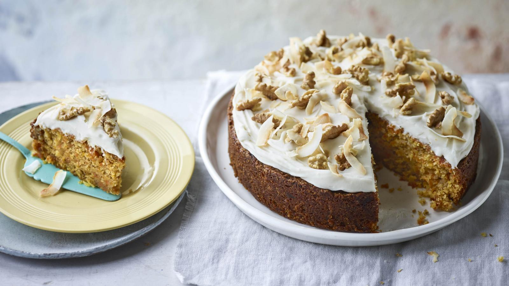

Vegan carrot cake

Enjoy a slice of this moist vegan carrot cake for afternoon tea or to mark a special occasion such as a birthday party.
For this recipe you will need a 20cm/8in springform or deep cake tin.
Each serving provides 505 kcal, 6g protein, 55g carbohydrate (of which 36g sugars), 28g fat (of which 7g saturates), 4g fibre and 0.4g salt.
Ingredients
- 2 tbsp ground flaxseed
- 250g/9oz plain flour
- 2 tsp baking powder
- 1 tsp ground cinnamon
- 275g/9¾oz golden caster sugar
- 50g/1¾oz desiccated coconut
- pinch of salt
- 225ml/8fl oz sunflower oil, plus extra for greasing
- 2 tbsp fine shred marmalade
- 3 tbsp soya milk
- 300g/10½oz carrots, peeled and coarsely grated
For the frosting
- 200g/7oz vegan ‘cream cheese’
- 2-3 tbsp maple syrup
- ½ tsp vanilla bean paste
- 50g/1¾oz shelled walnut halves, toasted
- coconut flakes, to decorate
Method
- Preheat the oven to 180C/160C Fan/Gas 4. Grease the inside of the cake tin and line the base with a circle of baking paper.
- In a small bowl whisk the ground flaxseed with 6 tablespoons cold water and set aside for 10 minutes to thicken while you prepare the remaining ingredients.
- Sift the flour, baking powder and ground cinnamon together in a large mixing bowl. Add the caster sugar, desiccated coconut and salt and stir together. Add the oil, marmalade and soya milk and mix until just combined.
- Add the grated carrots and the reserved flaxseed mixture and mix again until thoroughly combined.
- Spoon the mixture into the prepared cake tin and bake on the middle shelf of the oven for about 1 hour 10 minutes, or until a skewer inserted into the middle of the cake comes out clean. Cool in the tin for 10 minutes before turning the cake out onto a wire cooling rack to cool completely.
- To make the frosting, beat the vegan cream cheese, maple syrup and vanilla together until smooth. Place the cake on a large plate, spread the frosting over the top and scatter with roughly chopped walnuts to decorate.
Recipe credit: Annie Rigg, BBC Good Food
Return to Baking Page